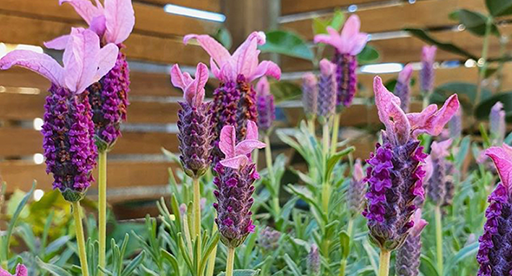

Lavender

Sun Seeker:
Lavender thrives in full sun, aiming for at least 6-8 hours of direct sunlight daily. This helps promote healthy growth and abundant flowering.
Drainage Delight:
Choose a well-draining potting mix or prepare your garden bed with sandy or loamy soil. Lavender dislikes soggy roots, so good drainage is essential to prevent root rot.
Watering Wisely:
Water moderately, allowing the top inch of soil to dry out completely between waterings. Avoid overwatering, as it can lead to root rot. Lavender tolerates drought conditions better than overwatering.
Feeding Frenzy (Not Really):
Lavender doesn't require frequent fertilization. A light application of balanced fertilizer once during spring is sufficient. Avoid overfertilizing, as it can encourage excessive leaf growth and limit flowering.
Pruning Power:
Regular pruning encourages bushier growth and promotes more flowers. Prune lightly after flowering to maintain a compact shape and remove spent blooms. Heavier pruning can be done in late winter or early spring before new growth appears.
Harvesting Happiness:
Once your lavender blooms, you can harvest the flower stalks for fresh use or drying. Cut the stems just below the flower head when the blooms are almost fully open, but not yet fully spent.